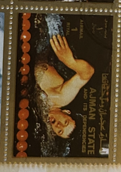
| SOURCE | TITLE| IMAGE MATCH | click to source page |
| eBay | Commonwealth Games Poster | eBay | 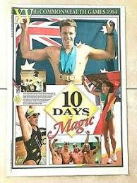 |
| PicClick CA | VINTAGE ANDY WARHOL Interview Magazine Lot Of 9 Sheen Nicholson Cannon Gere Hutt $204.19 - PicClick CA | 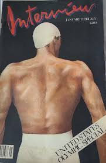 |
| OoCities.org | Athens Autographs | 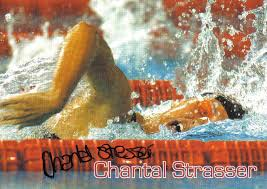 |
| Shutterstock | 4+ Thousand Middle East Stamp Royalty-Free Images, Stock Photos & Pictures | Shutterstock | 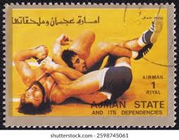 |
| Delcampe | Iran - 1974, Sparts, The 7th Asian Games, Tehran, Postes Persianes, Iran, *,**, or used | 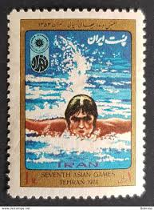 |
| Beckett | Pablo Morales Basketball Price Guide | Pablo Morales Trading Card Value – Beckett | 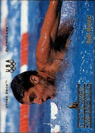 |
| Internet Archive | Swim Canada - March 1987 (No.126) : Thierry, Nick : Free Download, Borrow, and Streaming : Internet Archive | 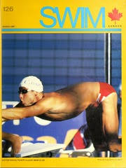 |
| Shutterstock | 3+ Thousand Munich Stamps Royalty-Free Images, Stock Photos & Pictures | Shutterstock | 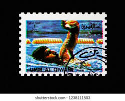 |
| Colnect | Stamp: Water polo (Ajman(Summer Olympic Games 1972, Munich (IV)) Mi:AJ 1227A,Yt:AJ 146D,Col:AJ 1971.00.00-07 📮 | 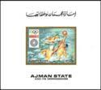 |
| Shutterstock | Munich Stamp: Over 1,861 Royalty-Free Licensable Stock Photos | Shutterstock | 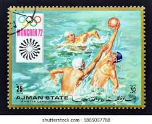 |